Blue Tents
Research on Temporary Housing in Tibet
This project examines how standardized emergency tents evolve into functioning camps over time. Drawing on satellite imagery and archival photographs, it traces adaptations at the unit, group, and camp scales, and proposes a structured incremental system that supports changing needs and collective life.
From Emergency Shelter to Living Camp
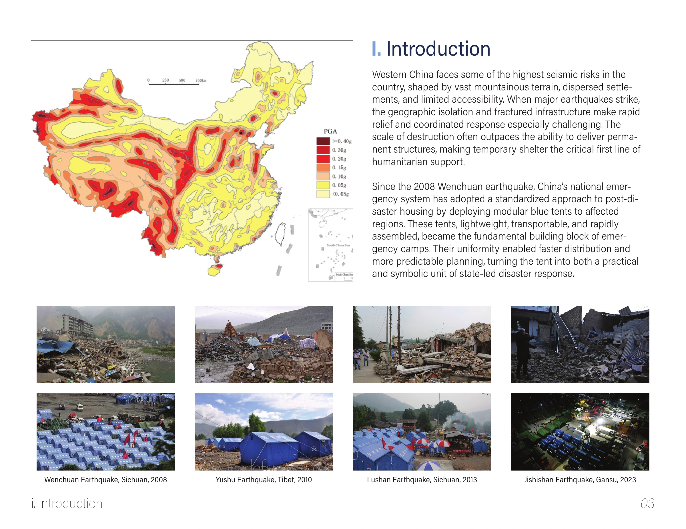
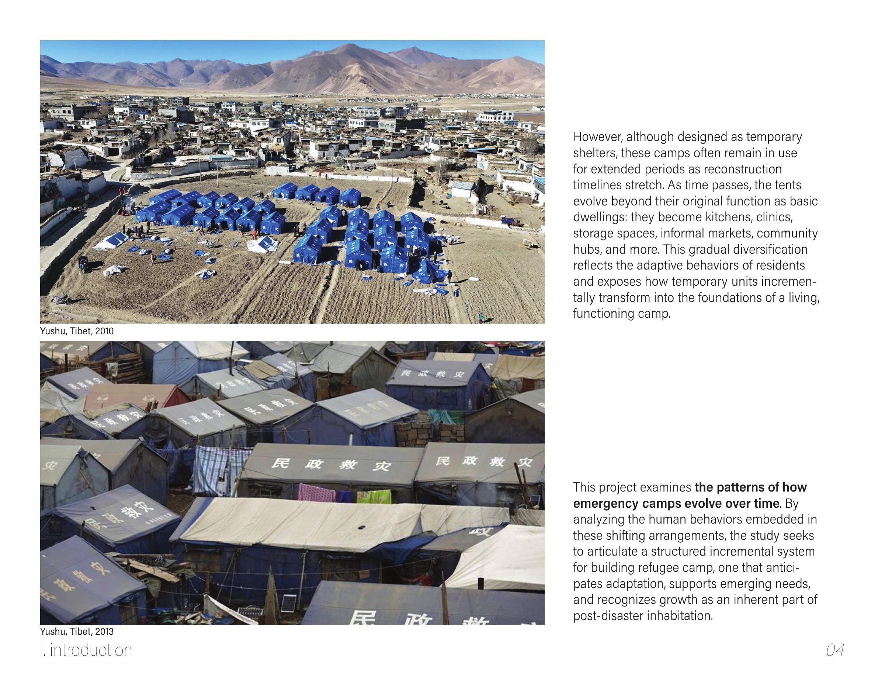
Research Method
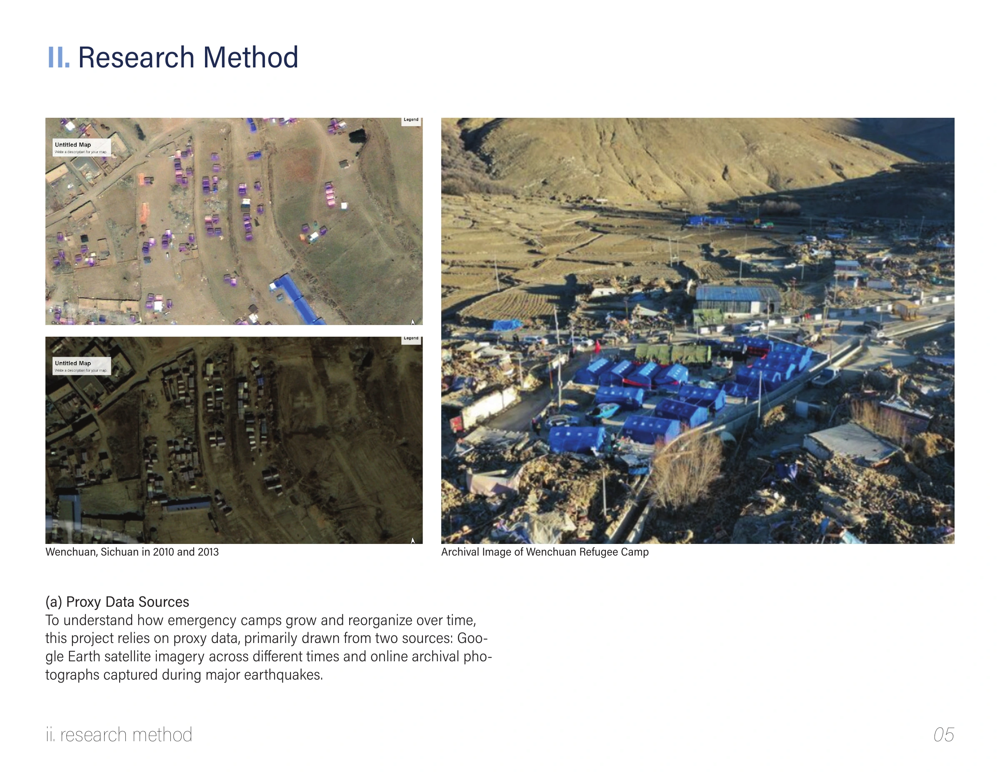
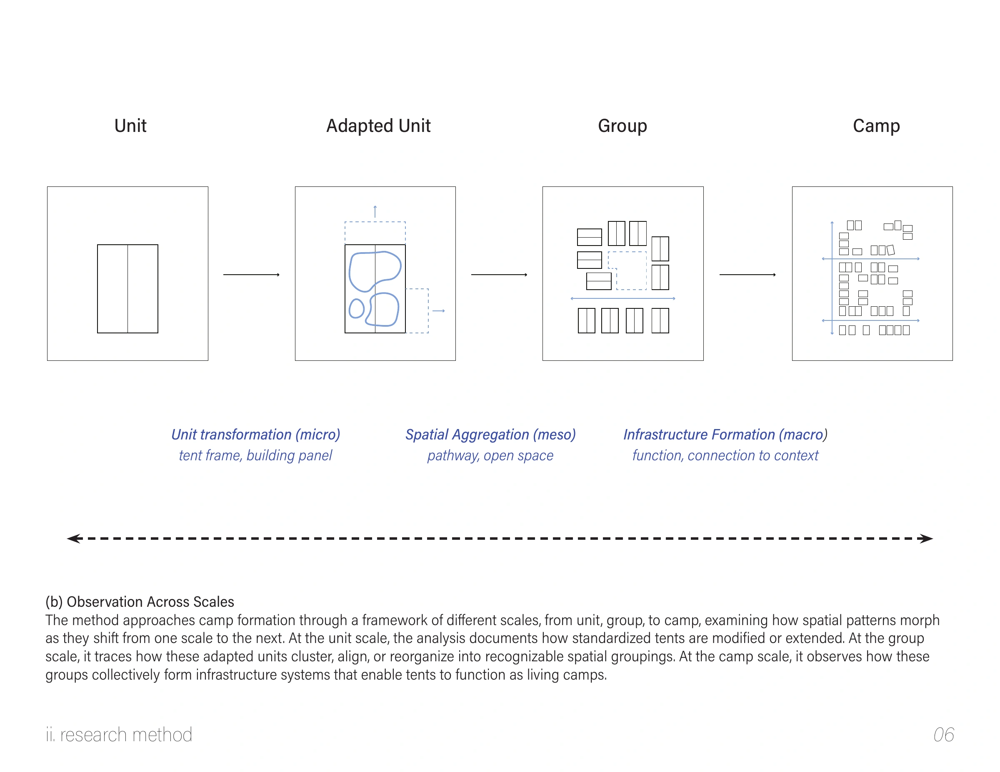
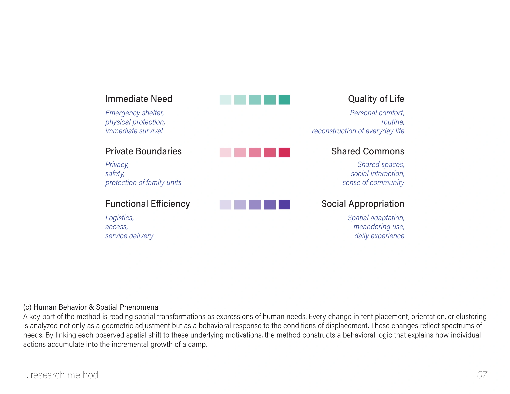
Unit Transformation
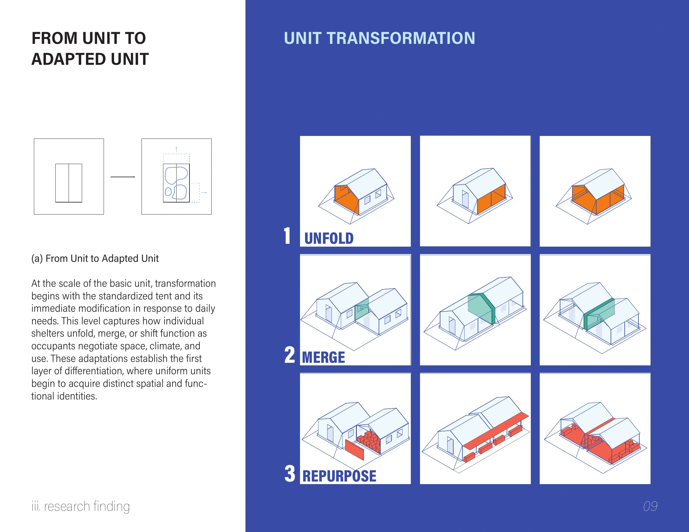
Spatial Aggregation
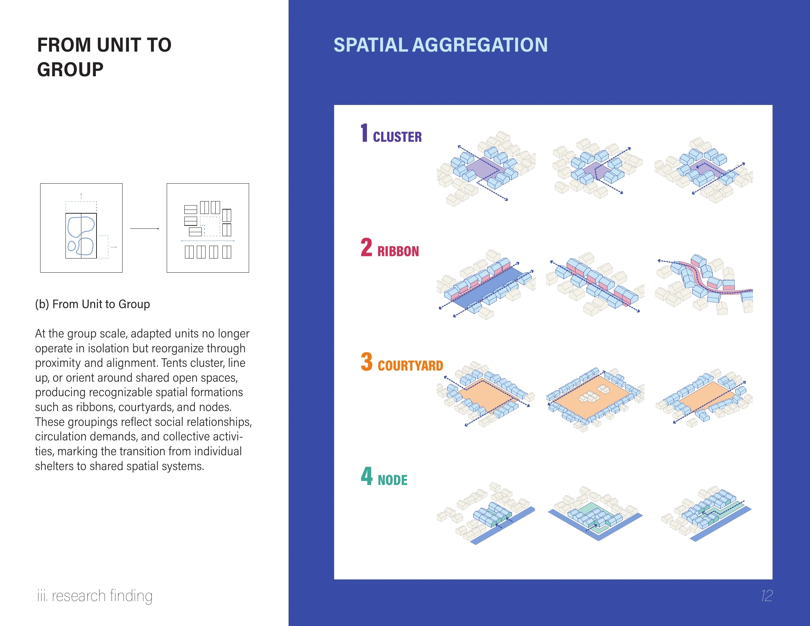
Infrastructure Formation
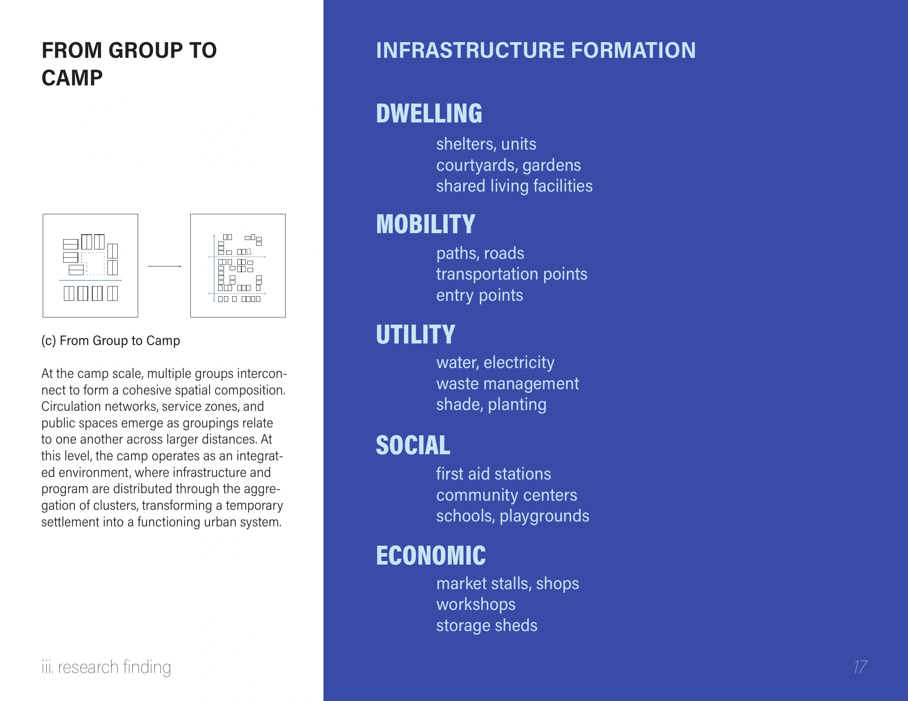
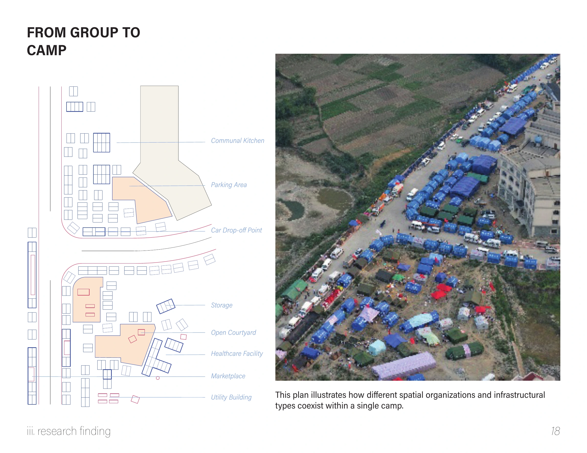
Designing a Structured Incremental System
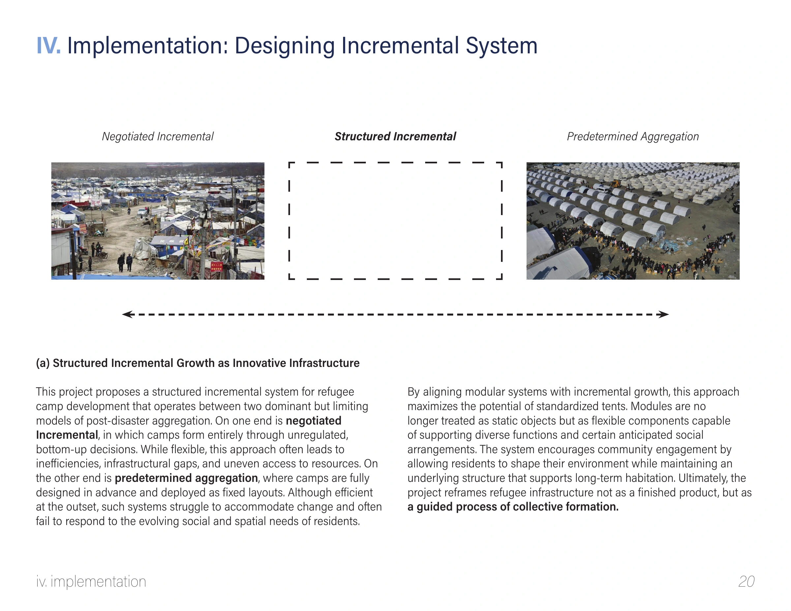
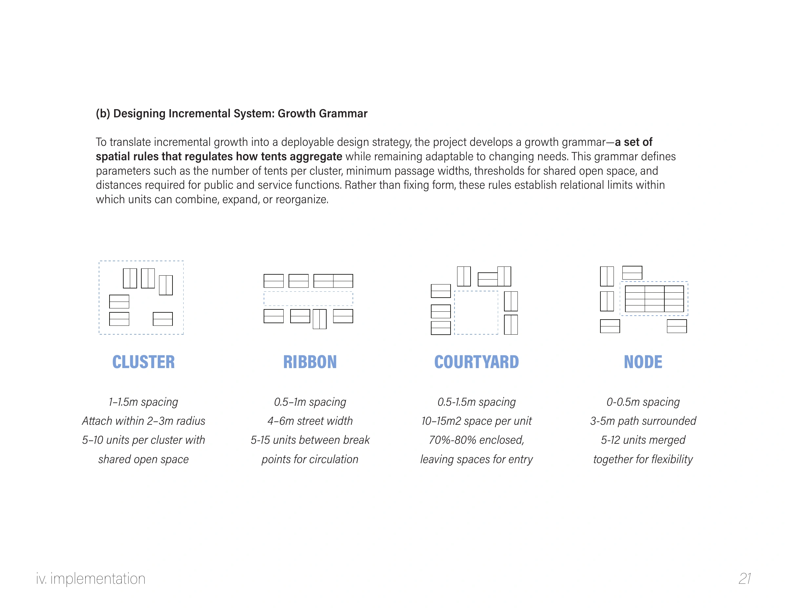
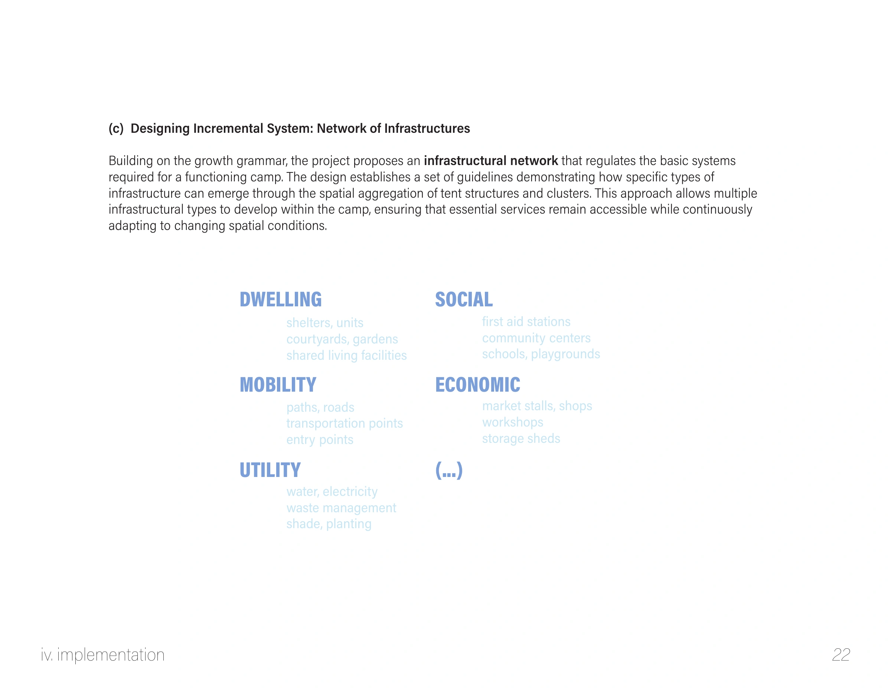